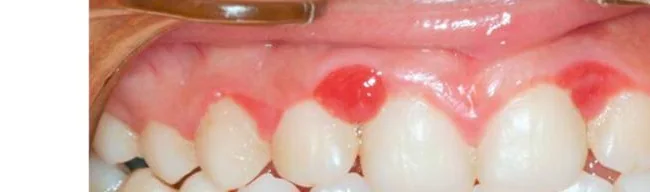

نسخه استخراجشده؛ ترجمه یا تأیید علمی انجام نشده است. وضعیت: captured
التهاب بافت نرمی که تاج دندان نیمهرویشیافته را میپوشاند — این پوشش، اپرکولوم نام دارد.
اپرکولوم فضایی بسته و بیهوازی میسازد که پاک کردنش با مسواک ممکن نیست.
پسمانده غذا و باکتری در آن محبوس میشوند.
مولر سوم فک بالای مقابل اغلب روی اپرکولوم متورم ضربه میزند و چرخه تورم و ترومای بیشتر را میسازد.
| شدت | یافتهها |
|---|---|
| حاد موضعی | درد، قرمزی و تورم اپرکولوم، طعم بد، ترشح چرک با فشار |
| حاد با گسترش | افزوده شدن تریسموس (محدودیت باز کردن دهان)، اختلال در بلع، لنفادنوپاتی، تب |
| مزمن | ناراحتی خفیف و متناوب، طعم بد مکرر |
⚠️ تریسموس، تب و اختلال بلع یعنی عفونت از حد موضعی فراتر رفته است — این وضعیت نیازمند آنتیبیوتیک سیستمیک و در موارد شدید ارجاع فوری است.
شستوشوی ملایم زیر اپرکولوم با سرنگ و سرم فیزیولوژی یا آب اکسیژنه رقیق برای خارج کردن پسمانده.
کنترل درد و شستوشوی مکرر با آب نمک ولرم در خانه.
آنتیبیوتیک سیستمیک فقط در صورت وجود تب، تریسموس، لنفادنوپاتی یا گسترش عفونت.
در صورت وجود دندان مقابل ضربهزننده و اگر آن دندان ارزش عملکردی ندارد، کشیدن دندان مولر سوم فک بالا میتواند چرخه تروما را فوراً بشکند.
تصمیم قطعی گرفته میشود:
کشیدن دندان نیمهرویشیافته — رایجترین راهحل قطعی، بهویژه اگر فضای رویش کافی نباشد.
برداشتن اپرکولوم (اپرکولکتومی) — تنها اگر دندان بتواند به موقعیت عملکردی کامل برسد؛ در غیر این صورت بافت اغلب بازمیگردد.
⚠️ کشیدن دندان در فاز حاد و در حضور تریسموس شدید توصیه نمیشود؛ ابتدا التهاب کنترل میشود.
ارزیابی سایر دندانهای نیمهرویشیافته و آموزش بهداشت اختصاصی آن ناحیه.
نخستین برخورد بدن با ویروس هرپس سیمپلکس نوع ۱. بیشتر در کودکان و نوجوانان، اما در بزرگسالان بدون سابقه تماس هم رخ میدهد.
| ویژگی | جزئیات |
|---|---|
| شروع | ناگهانی، با تب و بیقراری که اغلب پیش از ضایعات دهانی ظاهر میشود |
| ضایعه | وزیکولهای کوچک متعدد که پاره میشوند و زخمهای کوچک گرد با هاله قرمز میسازند |
| گستره | لثه، مخاط گونه، زبان، کام، لب — هر جای دهان |
| لثه | بهشدت قرمز، متورم و دردناک — «ژنژیویت شدید منتشر» |
| سیر | خودمحدودشونده، بهبود ظرف ۱۰ تا ۱۴ روز |

| هرپتیک اولیه | ژنژیویت نکروزان | |
|---|---|---|
| سن | اغلب کودکان | اغلب جوانان و بزرگسالان |
| ضایعه | وزیکول و زخمهای کوچک متعدد | نکروز حفرهای پاپیلا |
| محل | تمام مخاط دهان | فقط لثه، بهویژه پاپیلا |
| تب | معمولاً بارز | متغیر |
| مسری | 🔴 بله | 🟢 خیر |
| سیر | خودمحدودشونده | بدون درمان پیشرونده |
حمایتی: کنترل درد، آبرسانی کافی (مهمترین نکته در کودکان؛ خطر کمآبی بهدلیل درد هنگام بلع)، تغذیه نرم و خنک.
آسیکلوویر سیستمیک در موارد شدید یا بیمار دچار نقص ایمنی — و هرچه زودتر شروع شود اثر بیشتری دارد.
⚠️ آنتیبیوتیک بیفایده است — عامل بیماری ویروس است.
⚠️ کورتیکواستروئید موضعی ممنوع است — عفونت ویروسی را تشدید میکند.
جرمگیری در فاز حاد به تعویق میافتد؛ بافت بسیار دردناک است.
⚠️ اشتباه رایج ۱: در پریکورونیت، تریسموس نشانه گسترش عفونت است.
⚠️ اشتباه رایج ۲: بیماری هرپتیک وزیکول میسازد و تمام مخاط را درگیر میکند؛ نکروزان فقط لثه را.
⚠️ اشتباه رایج ۳: در بیماری هرپتیک، آنتیبیوتیک بیفایده و کورتیکواستروئید مضر است.